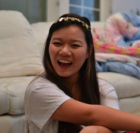
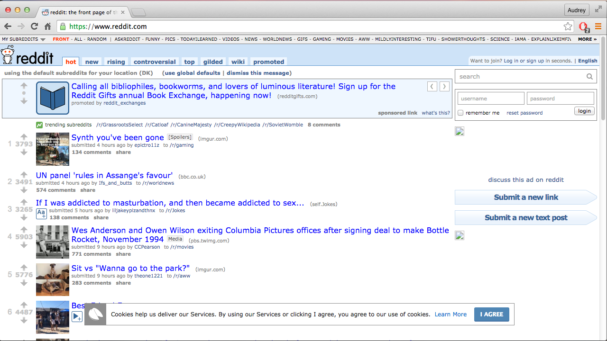
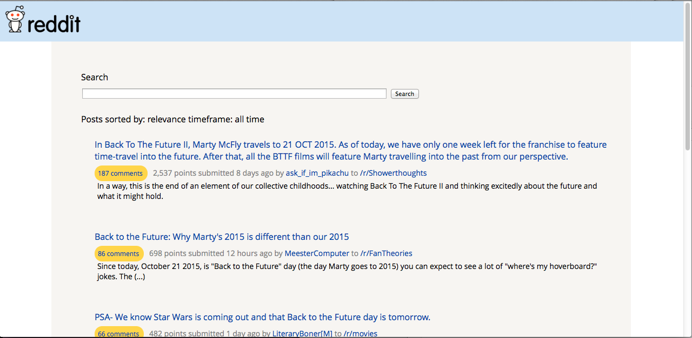

User Profile
- college student
- multiple commitments
- uses social media
- hungry all the time
- service oriented
- prioritizes academics
CALAPHIO REDESIGN
Summer 2015 - Current
Role: Project Manager, Web Developer
Team Members: Ben Le, James Young
Fall 2015 I served as Administrative Vice President for my community service chapter fraternity, Alpha Phi Omega, at UC Berkeley. One of my tasks included managing the chapter website that allows members to keep track of their membership requirements each semester. The website we had been using was built back in 2008 and was in major need for overhaul not only in interface but also in terms of outdated functionality.
Problems
Some problems of the old site included:
- Inaccessability of information: the old site included 2 navigation bars with multiple sublinks that had no correlation to each other. Finding information, for example, past platforms or the budget, was difficult to find and depended on rote tries.
- Lack of specific design choices: the website was built on functionality with little to no concern for a friendly user interface.
- Outdated functionality: for example, to upload news, one needed to know PHP (a backend web language), HTML, CSS, and Terminal to successfully upload news.
CALAPHIO 2.0
Solutions
I decided to fix the problems in the resulting ways:
- I divided the information from public to member-specific: Alpha Phi Omega Gamma Gamma Chapter Website now directs to a public page that all people (potential rushees, for example) may refer to in order to learn information regarding the chapter. There is a specific Members tab on this website that members can redirect to our specific member database website.
- Implemented specific visual choices, including sticking to two main colors, using large and legible font, spacing elements, and organizing information for easy navigation
- The members website is currently still in development. Likewise, this new website will update its interface and functionality. For example, now anyone with the right access may post news without needing prior specific computer science language familiarity. We are currently building the brothers database, calendar, power controls, and security. Its stack includes: Python Flask, Jinja, and SQL.
Applied: HTML, CSS, JQuery, PHP (limited), Jinja (limited), SQL (limited), teamwork, project management
User Profile
-

- bored
- short attention span
- multi-tasker
- reads fast
REDDIT REDESIGN
Fall 2015
Role: Web Developer
Team Members: Alejandro Salazar, James Young
Advertising itself as "the front page of the internet," Reddit is a popular site featuring relevant news and topics for the browsing web user. However, our team found its user interface to be particularly difficult to navigate. We sought to declutter the page and make navigating Reddit's vast archives much more efficient and accessible.
REDDIT 2.0
Reddit's original home page contains two navigation bars on top of each other. First, we moved the search and login information on the right column to the top right corner to optimize space. We then moved the top navigation bar containing subreddit topics to the right column in a fixed position so that they were accessible to users even while they scroll down the page. For the second navigation bar, we reduced the top tabs to five categories to minimize information overloading.
Visual Elements
We wanted to cohere to Reddit’s original white and light colored theme that we appreciated for its simplicity. We increased space between posts and font so that the posts were more readable. We choose the typography “Open-Sans” to maintain a simple, clean look. Overall, we tried to redesigned the page for a more open, clean page that was easier to read and navigate.
Post View
Search View
Applied: HTML, CSS, teamwork
User Profile
- first-generation college student
- low-income class
- attended public school
- visual learner
- shy
CLASSROOM EXPERIENCE REDESIGN
How may we achieve equity in the classroom and address the problem of the achievement gap?
Spring 2014 - Spring 2015
Role: VP of Leadership Development, Course Instructor
From Fall 2013 to Spring 2015, I helped teach the decal (democratic education program at UC Berkeley) course "Leadership and Justice: The Knowledge for Human Rights" that taught human rights issues, theories, and solutions to undergraduate UC Berkeley students. As VP of Leadership Development, my task was to research and strengthen pedagogy guidelines for the instructor team. Particularly, I wanted to bridge the gap between students and create an environment where students of all backgrounds have access to equal opportunities and outcomes for academic achievement.
PROCESS
Research
At the beginning of each semester, I administer ethnographic and participatory surveys to understand the backgrounds of the students who make up the class. Each week, I also administer and analyze participatory surveys to evaluate each weekly 2 hour classroom session: in the beginning of each class, students write down their prior knowledge and experience for the subject material, and at the end of the class, students then evaluate their understanding of the material along with a rating out of 7 for class facilitation. In total, the sources of analysis included instructor observations, student surveys, and student interviews.
Solution

The result is a transformed classroom where students and instructors co-create the learning environment: at the beginning of each class, students develop classroom rules and guidelines to transform the clasroom into a community. In addition, we implemented a multimodal, assessment-driven, and gamified pedagogy to help address diverse student needs and their preferred modes of learning. Under this gamified classroom, students earn points through different options of participation, including turning in an assignment or speaking up in class. We included options that auditory, kinetic, visual, or any other type of learner may demonstrate his or her participation. At the same time, weekly surveys allowed students to voice their concerns and allowed us to continously adjust course curriculum to increase every student's engagement and performance during class. Every semester, we observed increasing average course ratings (eventually achieving 7/7) and A-level final projects from all students, regardless of race, class, gender, sexual orientation, age, disability, background knowledge, immigration status, etc.
Applied: user-experience research, research analysis, design interation
User Profile
- 12 - 16 years old
- literate
- without disabilities
- from middle income families
- normal to poor grades
- likes to dream in class
OPEN IDEO Challenge Prompt Fall 2013:
"How might we inspire young people to cultivate their creative confidence?"
Role: Team Member
Team Members: Jeremy Axelrod, Amy Choi, Gary Duan, Cindy Liu, Kathryn Mock
Kids play. They engage in their imagination and explore and have fun. But soon they grow up and more often than not, lose their ability to play: they are placed in classrooms where textbook learning is the standard and face external pressure. How can we maintain and nurture these youth's creative confidence in making their ideas a reality?
PROCESS
Step 1: Defining our user and stakeholders

From our team's collective experience and knowledge, we discussed the issue and its scope and narrowed on a persona we can tailor the problem to. Ian is a 10 year old 4th grader who loves to build and tinker but lacks the open space to create without restrictions. His stakeholders include immediate people around him, including his parents, siblings, teachers, classmates, friends, and neighbors.
Step 2: Research
We researched and contacted schools and design centers in our local community to interview, including local nonprofits, youth centers, and innovative schools such as TechBridge, East Bay Collaborative for Undeserved Children, and Project H Design. We came up with interview questions to ask both program directors and students and visited these local schools to take a look into their innovative classrooms.
Some interview questions for schools included:
- What is the goal of your program?
- How is the program meeting this goal?
- How do students/parents receive feedback on their work?
- What is the school's defintiion of creativity and how does it encourage it?
- How does the school fit its curriculum with the california state standards?
Some interview questions for students included:
- What do you do after school and during the weekends?
- Can you tell us about your favorite accomplishment at school?
- What makes you feel confident?
- What is your favorite part of the school day?
Step 4: Solution

High school students across grades form teams to come up with an improvement to their school, ranging from topics such as food choice to a recyclefriendly environment. This semester long activity emphasizes students working together and mentoring each other as they step out of their personal comfort zones of the academic curriculum and explore solutions to problems they care about and have the opportunity to implement in real life.
Applied: research - interviews, teamwork, prototyping